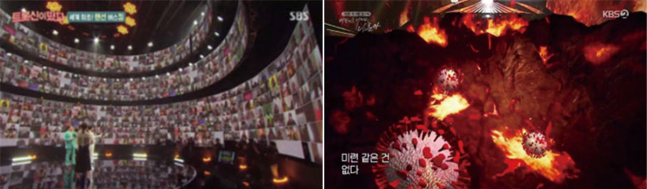

실감방송

Realistic broadcast실감미디어 제작을 위한 XR 시스템 구성,
특징 및 활용 동향
양기선
(KBS 미디어기술연구소 수석 연구원)
-
2020년 방송제작 공연에서는 코로나 팬데믹 영향으로 가상 화상 관객을 선보이기 시작하면서, 무관객 방송 제작 현장에 확장현실(XR:Extended Reality) 제작 기술을 적극 사용하기 시작하였다. 본고에서는 그동안 제작 현장에서 적용되어온 XR 제작을 위한 시스템의 기본 구성 요소와 그 특징, 문제점, 해결방안을 설명하고, 최근 국내 XR 스튜디오 구축 현황 및 그 주요 제작 활용 동향을 설명한다.
-
1들어가며일반적으로 XR(확장현실)은 가상현실, 증강현실, 혼합현실의 융합을 총칭한다. 코로나 팬데믹 직전까지 언리얼, 유니티등 개발 소프트웨어가 무료로 제공되고, 보급형 HMD기기와 360카메라 장치가 빠르게 발전하여 일반인들에게 보급되면서 개인 체험용 VR 콘텐츠 개발이 활성화 되었다. 그러나, VR 콘텐츠를 개발하는 회사들의 수익성은 다소 주춤하였고, VR장치의 발전만큼 시장은 확대되지 않았다. 또한, 이런 범용 VR 장치와 360영상과 같은 VR 콘텐츠 제작 기술은 VR 스튜디오나 공연에서 본격적으로 사용되지는 않았다.
그림 1실시간 합성결과 XR 콘텐츠출처: KBS ‘TV유치원,온택트 동물원’
그림 2코로나 팬데믹이 촉발한 스튜디오방송물의 화상방청객(좌)과 확장현실 그래픽 화면(우) 출처: SBS ‘트롯신이 떳다’, KBS ‘대한민국 어게인 나훈아 스페셜’
그 와중에, 2019년 말 촉발된 코로나 팬데믹은 2020년~2021년까지 방송 스튜디오 제작에 관객이 없는 초유의 사태를 불러왔다. 방송사들은 관객의 반응 그림이 없자 관객을 시뮬레이션 하는 기술을 스튜디오에 가져오기 시작했다. 화상 방청객이 그것이다.
KBS는 추석 이벤트 특집 프로그램 <대한민국 어게인 나훈아 스페셜>에 관객을 동원하려 하였으나 코로나 확진자가 급증하면서, 화상관객과 AR, VR, LED 기반 XR 제작 기술을 적극 도입하고 화상관객과 가상환경을 사용하여 시청자에게 큰 반향을 이끌었다. 코로나의 영향은 공연계도 비상이었다. SM은 네이버와 협업하여 발빠르게 XR 기반의 ‘beyond live’ 온라인 공연 서비스를 시작하였다.
이렇게 국내에서 XR 제작이 본격적으로 시작된 시점의 방송이나 공연에서 XR 제작의 목적은 특별히 제작된 무대나 스튜디오에서 주로 만들어지며, XR 콘텐츠 제작 주체는 PD이고 체험 주체는 TV나 스마트 기기를 통한 영상을 시청하는 시청자들이었다. 즉, HMD와 파사드 공간에 있는 개인의 체험이 목적이 아니라 PD가 의도한 화면을 잘 재현할 수 있을 뿐만 아니라 현실을 뛰어넘어 시청자가 좋아할만 한 새롭고 멋진 가상의 그림을 만드는 것에 그 목적이 있었다. 즉,
- 어떻게 현실을 가상현실 기술로 실제 존재하는 것처럼 혹은 더 리얼하게 재현 시킬 것인가? 현실감의 확장!
- 어떻게 무대의 연기자들이 현실을 모사한 가상현실 공간에서 몰입감, 실감을 느끼게 하여 그들의 연기를 도우면서, 그들이 마치 현실에 있는 것처럼 가상현실로 자연스러운 합성 장면을 만들어 낼 수 있을까? 몰입감의 확장!
- 현실의 위험하고, 반복 촬영이 어렵고, 촬영 불가능한 장면을 가상현실로 재현하여 실수 하더라도 쉽게 반복하여 실제 같은 장면을 만들어 낼 수 있을까? 재현의 확장!
에 그 목적이 있다고 할 수 있다.
본 내용은 실감 미디어 제작을 위한 스튜디오에서 제작하는 XR 시스템 구성을 중심으로 특징, 문제점, 요구사항, 시스템 활용 동향 및 그 사례 등을 설명 하고자 한다.
-
2XR 시스템 구성 및 특징스튜디오의 XR 제작은 기본적으로 LED 스크린 기반으로 제작되기 때문에 일정 규모의 공간을 필요로 한다. 그 주요 구성은 LED 스크린, 카메라 추적 장치, LED 컨트롤러, 카메라, 그래픽 합성 시스템, 랜더링 시스템, 조명 및 조명 컨트롤 시스템 등 기존의 블루스크린 기반의 가상현실 시스템 구성과 유사하지만, 큰 차이점은 배경 합성을 위해 블루스크린이 LED 스크린으로 바뀌고, 배경 LED 스크린의 역할이 조명역할까지도 일부 포함되는 것으로 요약할 수 있다. 그 장점은 배우나 스텝도 후반과정 필요 없이 LED 스크린을 통하여 실시간으로 가상환경을 직접 체험하는 듯 연기나 감독에 자연스럽게 몰입할 수 있게 하고, LED 스크린이 간접조명으로 사용되어 배우가 실제 현장에 있는 듯 더욱 멋진 간접광을 후반제작 없이도 실시간으로 만들어 낼 수 있다는 점에 있다.
그림 3배우/스텝 모두 몰입감 느껴지는 제작 현장, 인물 LED간접광출처: Unreal Engine, Youtube, Behind the Scenes with UE4’s Next-Gen Virtual Production Tools
2.1.XR 시스템 구성 요소, 역할, 제조사
XR 시스템 기본 구성은 그림4에서 보는 것과 같이, 미디어 합성 창치에서, 카메라가 바라보는 시점의 가상현실 영상으로부터 LED영역에 투영된 영상을 만들어 LED 스크린에 출력 시켜주는 기능이 중요하다. 이때 카메라의 위치는 카메라 추적 장치로부터의 위치와 초점 정보기반의 ‘카메라 캘리브레이션(Calibration)’ 기술이 사용된다.
그림 4XR 시스템 기본 구성출처: Unreal Engine, Youtube, Behind the Scenes with UE4’s Next-Gen Virtual Production Tools
그림 5각 제품의 사용자 인터페이스출처: Disguise,Pixotope,Zero Density
표 1XR 시스템 주요 구성 요소 및 역할, 제조사<표1>은 XR 시스템의 주요 구성요소 및 역할, 요구기술과 주요 제조사를 보여준다. 2018년 동계 올림픽에서 국내에 처음으로 XR을 소개한 디스가이즈(Disguise)장비를 필두로, 픽소토프(Pixotope), 제로덴시티(Zero-Density)등이 언리얼 기반의 XR 솔루션을 판매 중에 있다. ‘디스가이즈’는 영국에서 오랫동안 사용되어온 미디어 서버 합성 및 운영 장치이다. 2019년 말부터 XR 제작 기능을 추가하여 최근까지 국내에서 XR 붐을 일으키며 가장먼저 그 제품을 상용화시켰다.
‘픽소토프’는 방송사에서 그동안 사용하여온 VR 기기들을 언리얼 기반으로 제작 가능하게한 솔루션을 가지고 있다. 기존의 방송환경의 다양한 장치를 셋업하기 위한 사용자 인터페이스가 잘 정리 되어 있다.
‘제로덴시티’는 언리얼 기반의 VR 솔루션을 가장 먼저 상용화한 제품으로, 언리얼을 지원하면서 VR에서 크로마키)1 기능이 뛰어난 성능을 가지고 있는 것으로 유명하며, 이 제품 역시 XR 기능을 추가하여 시장에 그 영향력을 확대하려 하고 있다. 이런 XR을 위한 제품들의 주력 랜더링 엔진은 모두 무료 게임엔진인 언리얼을 기반으로 하는 것이 특징이다. 언리얼에서도 역시 ‘In-Camera VFX2’라는 기술을 무료로 공개하여, nDisplay기반의 LED 월 셋팅 모듈과 함께 XR 시스템 구축을 직접 개발할 수 있도록 기술 지원 중에도 있다. XR 시스템은 기존 VR, AR 에 사용되고 있던 장치로서 카메라 추적 장치와의 연동이 매우 중요하며, 특히, 방송에서는 주로 사용 중에 있는 줌렌즈형 카메라에 대해서도 카메라 추적이 가능해야 하며, 광고/영화/드라마 등 더욱 정교한 장면의 합성을 위해서는 고품질의 다양한 단랜즈 기반 시네마 카메라를 사용하기도 한다.
- 크로마키(Chroma Key) : 화면 합성 등의 특수 효과를 이용하기 위해 이용하는 배경. 흔히 초록색과 파란색을 사용하여 그린스크린, 블루 스크린이라고도 함. 촬영 과정에서 배우가 단색 배경 앞에서 연기를 하고 후편집 과정에서 같은 색으로 찍힌 부분을 다른 배경으로 바꾸면 바꾼 배경에서 연기한 것과 같은 효과를 낼 수 있음(출처:나무위키)
- 인카메라VFX(In-Camera VFX): 언리얼이 제시하는 라이브 액션 영화 촬영 시 LED기반의 리얼타임 비주얼 이펙트를 촬영하는 방법
2.2.요구기술, 문제점 및 해결방안
주요 문제와 해결책은 다음과 같다.
- LED 색 이질감: LED 모듈 양산 일이 다를 경우 LED 색보정 혹은 유사 양산 일을 가진 LED로 통일 권장
- 플리커링 현상: LED 컨트롤러와 카메라, 렌더링 장비등 모두 동기화, 동기화 장치 필요
- AR 색 이질감: 블랜딩 방식 차이, 다양한 블랜딩 방식 필요
그림 6LED 색보정 전후(좌)와 플리커링/AR블랜딩 문제 보정 전후(우)출처: Disguise,Pixotope,Zero Density
- 바닥 LED 배경 VR 이질감: AR 객체 이용하여 이질감 큰 VR LED 바닥 일부 덮음
그림 7AR 응용, AR객체(붉은영역), VR객체(노랑영역)- 영역간/경계 이질감:
- 배경을 AR로 확장하여 스튜디오 주변 덮음
LED 내부 VR 영역와 확장영역 AR 색보정
LED 내부 VR 영역과 확장영역 AR 경계 정합
이 밖에도
- XR 제작에 필요한 고품질 그래픽 장면/오브젝트들 에셋
- AR, VR 에니메이션 제어 모듈
- 다수의 VR,AR 렌더링 시스템들 간 동기화 운영 위한 별도의 통합 사용자 인터페이스
- VR영역과 AR영역 간 상호 자연스럽게 전환되기 위한 AR 컬링 박스
- 가상 라이트와 실 조명 동기화 연동 및 운영 모듈
등 제작 사정에 따라 추가 개발이 필요할 수 있다.
그림 8확장 AR 적용 전후그림 9시스템, 주요장치, 요구기술, 문제점, 해결방안 -
3국내 주요 XR 구축 동향 및 제작 사례
3.1.XR 스튜디오 동향
브이에이코퍼레이션(VA Corporation)은 하남에 국내 최대의 XR 스튜디오를 운영하고 있으며, XON 스튜디오는 파주에 국내 최초 XR 스튜디오를 구축하고 XR 콘텐츠 제작을 선도하고 있으며, 비브 스튜디오는 광주에 XR 제작 스튜디오를 설치하여 드라마, 광고 등 다양한 XR 콘텐츠 제작을 시도 중에 있다. 이 밖에도 덱스터(Dexter), 자이언트 스텝(Giantstep) 등 다양한 메이저 그래픽 전문 디자인 회사들도 자신들만의 XR 스튜디오를 구축하여 운영 중에 있다.그림 10국내 주요 XR 스튜디오 구축 사례출처: VA 코퍼레이션, Xon, 비브스튜디오
3.2.XR 제작 사례, 주요 활용 분야
XR 시스템을 기반으로 제작할 수 있는 분야는 매우 다양하지만, 시장성 측면에서 광고제작과 영화/드라마컷 제작에 주로 사용되고 있으며, 음악 공연에서는 뮤직비디오처럼 XR 뮤직방송 장르를 개척하고 있다. 그 예로, 2020~2021년 MBC는 ‘On The Move’를 통해 XR 뮤직 전용 콘텐츠를 유튜브를 통해 선보인바 있다.
KBS는 <키스 더 유니버스>라는 특별 기획 프로그램에 실감있는 AR 공연을 초대형 LED 월과 합성하여 몰입감 있는 XR 콘텐츠를 제작하기도 하였으며, XR <뮤직뱅크>,을 통해 방송된 <온택트 동물원>, <다큐인사이트>, 등 프로그램을 통해 다양한 예능, 다큐, 시사교양 프로그램에서 기존의 숙련된 VR 제작을 기반으로 다양한 분야에서 XR 제작을 시도하였다. 그 동안 국내에서 시도되었던 장르를 정리하면 다음과 같다.
- 광고, 공연, 영화, 드라마, 다큐, 에니메이션, 크로마키 스튜디오, 인터뷰룸 등
특히, XR 제작은 셋트 제작 및 원거리 로케이션 제작 대체 효과가 크며, 별도의 크로마키 스튜디오 필요 없이 LED 스크린 만으로 크로마키 스튜디오와 조명 역할을 대체하여 제작 가능하여 다양한 응용제작이 가능하다. XR 제작 환경은 기존의 크로마키 기반 VR 제작과 달리 방송 조명 사용이 보다 더 자유로우며, 함께 연동될 경우 현실감이 더 크다. 이질감을 줄이기 위해서 가상 조명과 실 조명이 연동될 경우 배우의 현장감이 더욱 자연스러워지며, 따라서, XR 제작에서 조명의 역할이 여전히 매우 중요하다.
그림 11광고제작출처: 위지윅스튜디오
그림 12공연 or 영화/드라마/다큐/에니메이션 제작출처: KBS, Nant Studio
그림 13크로마키 VR스튜디오 겸용, XR인터뷰 룸출처: KBS
2022년 현재 방송중인 MBN의 <아바타 싱어>는 해외의 가상캐릭터 음악 방송 형식을 국내 기술로 만들어 방송 중에 있다. 무대 자체가 가상과 현실이 혼합된 공간에서 관객 역시 가상환경에서 가상 아바타의 노래를 즐기는 모습이 그대로 화면에 담기었다. 마치 게임 환경에 실제 관객이 들어온 듯한 XR 콘텐츠를 재현하여 반향을 일으키고 있다
그림 14가상캐릭터 융합 XR 콘텐츠 제작 사례출처: FOX TV ‘Alter Ego’, MBN ‘아바타싱어
-
4마치며이처럼, 그동안 주로 HMD나 미디어 파사드를 통해 개인 체험 중심으로 몰입감을 즐길 수 있었던 VR 기술들이, XR 스튜디오를 통하여 무대 및 스튜디오 제작 현장에서 PD/스텝/배우와 심지어는 관객들까지도 모두 함께 마치 가상환경에 들어와 있는 듯한 더욱 몰입된 경험과 촬영 환경을 제공할 수 있게 되었다. 최근에는 주로 특별히 제작된 XR 스튜디오에서 시도 되었던 기술들이 점차 코로나 팬데믹이 끝나가는 지금, 관객들도 함께 참여하는 실감 XR 무대로 변모하고 있다. 향후, 성큼 다가온 가상캐릭터의 활성화, 디지털 트윈, 메타버스 서비스 기술과 함께 XR 제작이 그런 다양한 신기술 및 서비스 환경과 융합하여 어떤 새로운 그림을 만들어낼지 그 귀추가 주목된다.
-
Reference
- KOBA2022 workshop, KBS XR 제작 시스템 활용 동향 및 요구 기술
- 디스가이즈(disguise), https://www.disguise.one/kr/
- 픽소토프(pixotope), https://www.pixotope.com/
- 제로덴시티(Zero Density),https://www.zerodensity.tv/
- 언리얼 nDisplay 개요, https://docs.unrealengine.com/4.27/ko/WorkingWithMedia/IntegratingMedia/nDisplay/Overview/
- 브이에이코퍼레이션, http://vacorp.co.kr/home/v2/
- XON 스튜디오, https://www.xon.co.kr/
- 비브스튜디오, http://www.vivestudios.com/
- 위지윅스튜디오, http://www.wswgstudios.com/
- MBN 아바타싱어, https://m.mbn.co.kr/tv/911